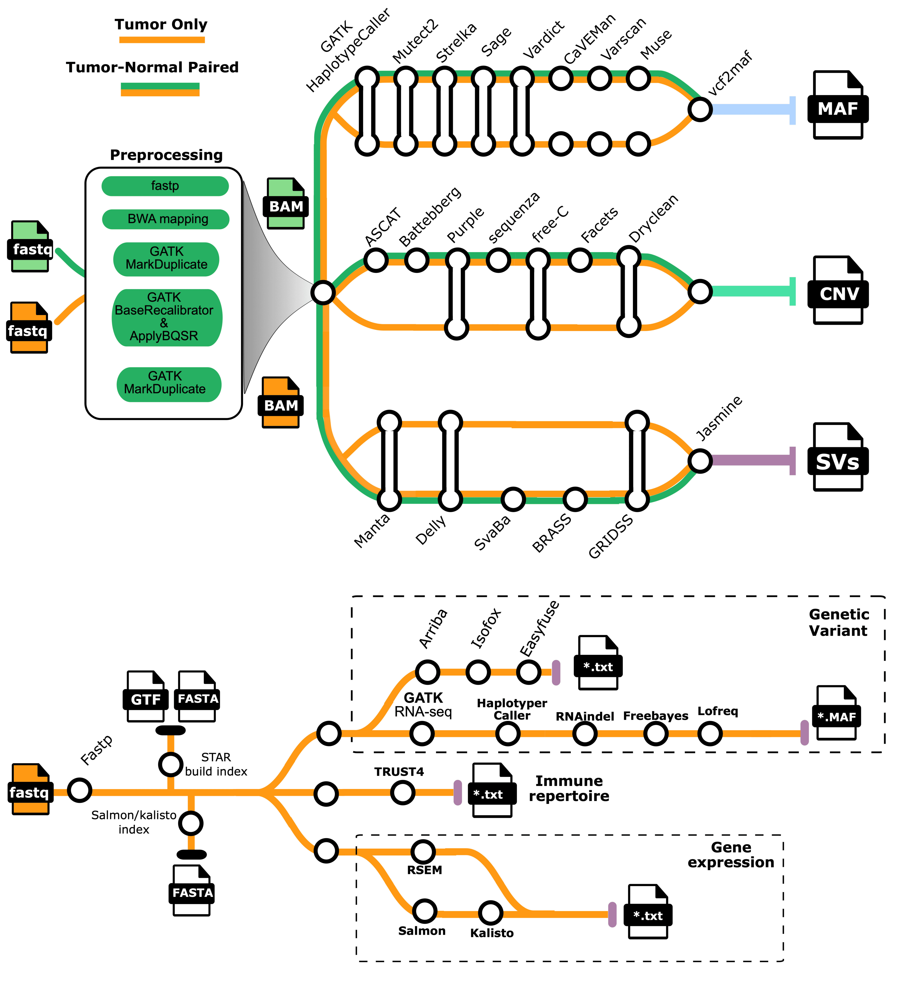

1. Clindet#


1.1. Introduction#
Clindet is a next-generation high-throughput sequencing data analysis workflow designed for clinical applications (e.g., DNA-seq, RNA-seq).
Clindet is a Snakemake pipeline for comprehensive analysis of cancer genomes and transcriptomes, integrating multiple state-of-the-art tools to generate consensus results. The pipeline supports a wide range of experimental setups, including:
FASTQ input files
Whole genome sequencing (WGS), whole transcriptome sequencing (WTS), and targeted/panel sequencing
Paired tumor/normal and tumor-only sample configurations
Most GRCh37 and GRCh38 reference genome builds
Non-human species (e.g., mouse, worm)
1.2. Pipeline overview#
{kind=link}
1.3. Steps#
Read post-processing: (GATK MarkDuplicates , GATK BaseRecalibrator , GATK ApplyBQSR)
SNV, MNV, INDEL calling: (SAGE, HaplotypeCaller, Mutect2, Strelka, CaVEMan, Varscan, Muse, Pindel )
CNV calling: (AMBER, COBALT, PURPLE, ASCAT, free-C, Battebberg, sequenza, Facets, Dryclean)
SV and driver event interpretation: LINX
RNA transcript analysis: RSEM
RNA fusion gene detection: Arriba
Oncoviral detection: VIRUSbreakend*, VirusInterpreter*
Telomere characterisation: TEAL*
Summary report: ORANGE
1.4. Usage#
Note
If you are new to snakemake, please refer to this page on how to set-up snakemake. Make sure to test your setup before running the workflow on actual data.
Create a samplesheet with your inputs (WGS/WES *fastq in this example):
Tumor_R1_file_path,Tumor_R2_file_path,Normal_R1_file_path,Normal_R2_file_path,Sample_name,Target_file_bed,Project
Patient1_T_R1.fq.gz,Patient1_T_R2.fq.gz,Patient1_N_R1.fq.gz,Patient1_N_R2.fq.gz,Patient1,target.bed,WES
Patient2_T_R1.fq.gz,Patient2_T_R2.fq.gz,,,Patient2,target.bed,WES
Note
It is recommended to create a Snakemake file for each project. Specific examples can be found in the Clindet directory, including snake_wes_template.smk, snake_wgs_template.smk, and snake_rna_template.smk. Project-specific parameters can be modified within these files.
Launch Clindet:
nohup snakemake --profile workflow/config_slurm -j 40 --printshellcmds \
--use-singularity -s snake_wes.smk \
--latency-wait 300 --use-conda --conda-frontend conda -k >> Log.out &
Warning
If you do not need to submit and run tasks on the Slurm platform, there is no need to specify the ** –profile ** parameter.
1.5. Credits#
The Clindet pipeline was written and is maintained by Yuliang Zhang (@Yuliang Zhang) , XXX from
the National Research Center for Translational Medicine at Shanghai.
We thank the following organisations and people for their extensive assistance in the development of this pipeline, listed in alphabetical order: